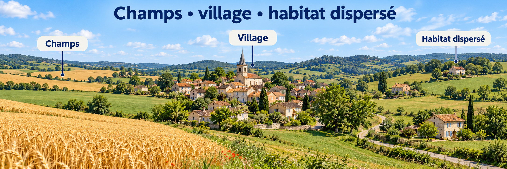
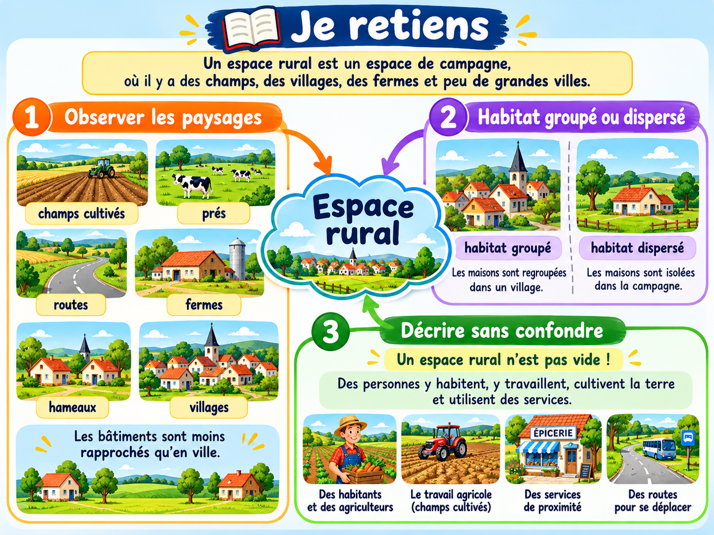

Reconnaître et décrire un espace rural
Dans un espace rural, les champs, les prairies, les bois et les villages occupent souvent une grande place.
La campagne et ses villages

Visuel pédagogique photoréaliste composé pour comparer les paysages. Ce n’est pas une photographie documentaire.
1. Observer les paysages
On peut voir des champs cultivés, des prés, des routes, des fermes, des hameaux et des villages. Les bâtiments sont souvent moins rapprochés qu’en ville.
2. Habitat groupé ou dispersé
Dans un village, plusieurs maisons sont regroupées. À la campagne, certaines fermes ou maisons sont isolées : on parle d’habitat dispersé.
3. Décrire sans confondre
Un espace rural n’est pas forcément vide : des personnes y habitent, travaillent, cultivent la terre ou utilisent des services.
